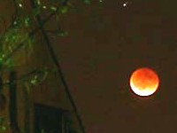
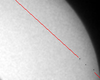

Простая астрофотография

Частичное солнечное
затмение
2005-10-03

Почему кратеры не видны
в полнолуние
и при затмении Луны?

Прохождение Меркурия
по диску Солнца
2003-05-07

Ломоносов открыл атмосферу Венеры
в 1761 году
Новости
2013-08-17 Частые затмения Солнца на Марсе
2013-08-14 Новая звезда в созвездии Дельфина
2013-08-13 Испытание многоразовой ракеты "Кузнечик"
2013-08-01 Затмение Деймоса Фобосом
2013-05-22 Фотография моря на Титане